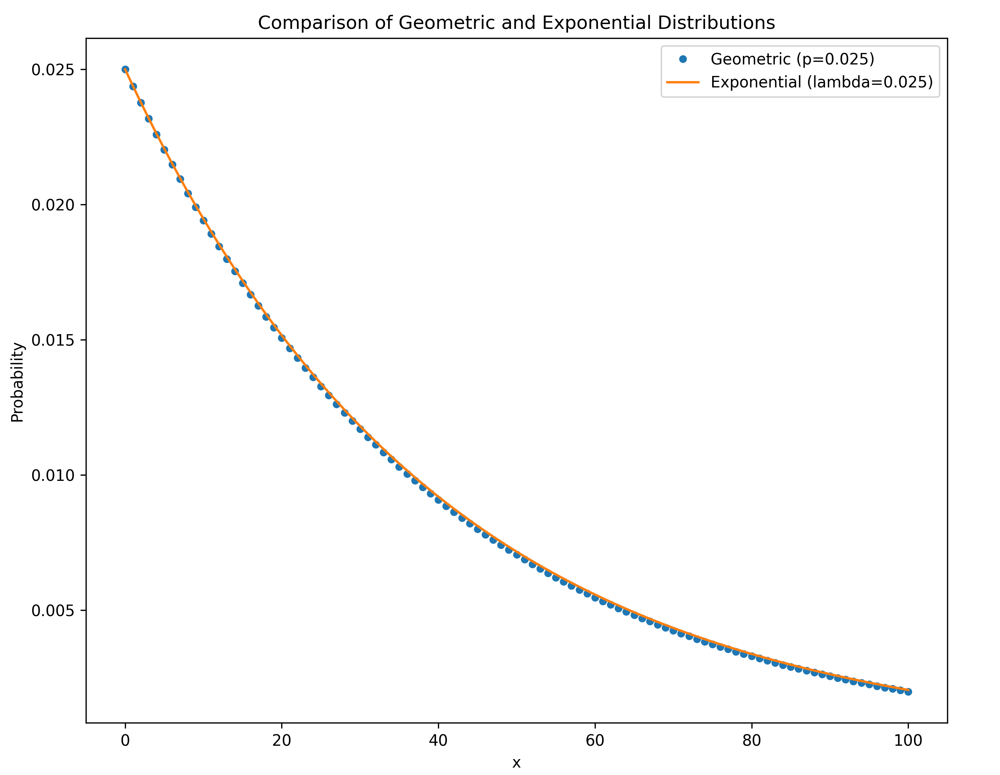

Kingman's n-coalescent
Consider tracing the ancestry of a sample of $k$ individuals from the present, back into the past.
This process eventually coalesces to a single common ancestor (concestor) of the sample of individuals.
Kingman’s n-coalescent describes the statistical properties of such an ancestry when $k$ is small compared to the total population size $N$.
The coalescence of two ancestral lineages
- First, consider two random members from a population of fixed size $N$.
- By perfect mixing, the probability they share a concestor in the previous generation is $1/N$.
- The probability the concestor is $t$ generations back is $$\Pr(t)= \frac{1}{N}(1−\frac{1}{N})^{t−1}.$$
- It follows that $g=t−1$,has a geometric distribution with a success rate of $\lambda = 1/N$, and so has mean $N$ and variance of $N^3/(N − 1)$.
The coalescence of k lineages
With $k$ lineages the time to the first coalescence is derived in the same way, only now there are $k \choose 2$ possible pairs that may coalesce, resulting in a success rate of $\lambda = {k \choose 2}/N$.
The mean time to first coalescence ($t_k$) of is: $$E[t_k] = \frac{N}{k \choose 2}.$$
This implicitly assumes that $N$ is much larger than $O(k^2)$, so that the probability of two coalescent events in the same generation is small.
The exponential distribution
The geometric distribution converges to the exponential distribution as the population size becomes larger and the rate of coalescence becomes smaller.
The coalescent is a diffusion approximation

Kingman (1982) showed that as $N$ grows the coalescent process converges to a continuous-time Markov chain.
$\lambda = \binom{k}{2}/N$ is the rate of coalescence, i.e. the probability of coalescing a pair from $k$ lineages on a short time interval $\Delta t$ is $O({\lambda\Delta t})$. Unsurprisingly the solution turns out to be the exponential distribution:
$$f(t_k)=\frac{ {k \choose 2} }{N}\exp\left(-\frac{ {k \choose 2}t_k}{N}\right)\,,$$or more relevant to a tree hypothesis, for a specific pair of lineages:
$$f(t_k)=\frac{1}{N}\exp\left(-\frac{ {k \choose 2}t_k}{N}\right)\,.$$The coalescent density for a genealogy
For a genealogy $g$ with coalescent times $\mathbf{t} = \{t_2, t_3, \dots, t_n\}$ we can write the probability density of the genealogy:
$$P(g|N)=\frac{1}{N^{n-1}}\prod_{k=2}^n\exp\left(-\frac{ {k \choose 2}t_k}{N}\right)\,.$$
The coalescent density with varying population size
The generalization of the coalescent for the case where the population size changes over time, $N = N(t)$ is given by Griffiths and Tavare (1994).
They showed that the coalescent density for the first coalescence event being at time $t$ in the past given $n$ lineages is:
$$ f(t) = {\frac{\binom{n}{2} }{N(t)} } {\exp\left(-{\int \limits_0^t \frac{\binom{n}{2} }{N(x)} dx }\right)} $$
So as long as the coalescent intensity function $\frac{1}{N(t)}$ is integrable with respect to $t$, then the coalescent density of a tree can be computed for population size function $N(t)$.
Square wave
Saw tooth
Custom: